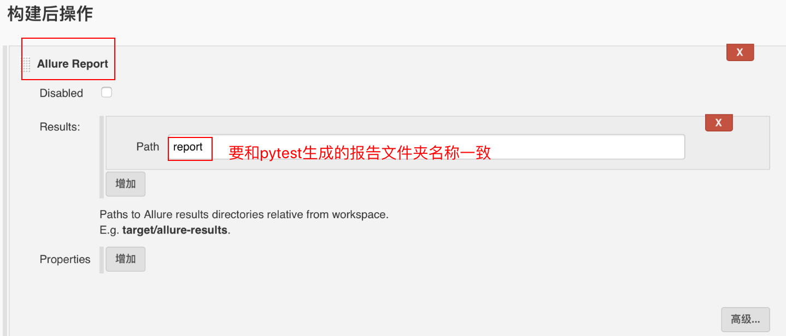

Jenkins持续集配置
学习目标
- 掌握Jenkins持续集成的相关配置
持续集成可以分为以下个步骤：
- Jenkins 安装allure插件生成测试报告
- Jenkins 安装和配置AllureCommandline,来代替命令行操作
- 安装Git插件，配置和管理代码
- 构建触发器并配置发送邮件
- 进行项目构建，生成测试报告
1. Jenkins安装allure插件
jenkins和allure一起配合可以自动帮我们生成好看的测试报告,不用每次自己都要自己使用命令行生成.
- 进入jenkins系统管理 -> 管理插件
- 点击可选插件
- 搜索框搜索Allure
- 选中安装
注意：下载经常失败的可以把下载源更换为清华源：https://mirrors.tuna.tsinghua.edu.cn/jenkins/updates/current/update-center.json
2. 安装Allure Commandline
在Jenkins系统管理——> 全局工具管理
找到Allure Commandline，点击Allure Commandline安装

点击后,弹出如下页面, 输入一个别名

选择安装版本
点击新增安装-选择解压*.ip/*.tar.gz
解压目录选择已经下载好的allure2.5.0.zip所在目录(⚠️ 版本要和第4步的版本一致)
点击保存

3. Jenkins 和Git进行代码的持续管理
在首页，点击创建任务， 创建一个自由风格项目—> 点击确定
输入项目描述
选择GitHub Project进行代码的管理
输入github的远程库名(⚠️在公司里要选择自己仓库名)

勾选git
Repository URL 输入和第4步一样

点击add添加github用户名和密码

4. 构建触发器并发送邮件
通过构建触发器,可以在约定的时间自动运行测试脚本,有错误可以自动的给开发人员发送邮件,不用测试人员一直守着或口头通知开发人员.
4.1 构建触发器
- 在构建触发器选项框，选择POLL SCM, 根据需要勾选Build periodically选项
- 在日程表填写crontab命令
这两步主要作用是根据定时任务，查看gitgub版本是否更新，如果更新自动构建项目

日程表填写的参数的含义:
- 第1个参数：分钟 minute，取值 0~59；
- 第2个参数：小时 hour，取值 0~23；
- 第3个参数：天 day，取值 1~31；
- 第4个参数：月 month，取值 1~12；
- 第5个参数：星期 week，取值 0~7，0 和 7 都是表示星期天；
5个参数可选择性设定，不写死的参数用 * 号代替，参数之间用空格隔开.
点击增加构建步骤,选择Execute shell
Command框输入:
export PATH=$PATH:'pytest可执行的目录' pytest
4.2 添加测试报告生成路径
构建后操作,点击增加构建后操作步骤,选择Allure Report
Path框输入,生成的报告文件夹名称, 注意:文件夹名要和pytest生成的报告文件夹名称一样

4.3 配置邮箱列表
- 点击增加构建后操作步骤，选择Editable Email Notification
- 点击Advanced Setting…
- 点击Trigger的高级按钮
- Recipient List输入邮件接收列表，多个邮箱逗号分隔

在Jenkins系统中配置邮件
在系统全局配置中进行邮件配置, 要配置管理员的邮箱、发送/接收邮件的服务器、邮件接收人的邮箱列表.
配置如下:
配置邮件系统用户： 系统管理-系统设置-Jenkins Location 系统管理员邮件地址：用户名@163.com(发送邮件用户) 配置系统邮件： 系统管理-系统设置-邮件通知 SMTP服务器：例 smtp.163.com 用户默认邮件后缀：例如 @163.com 高级-使用SMTP认证 输入发送邮箱和密码 -可以使用测试邮件验证 配置(发送附件)邮件： 系统管理-系统设置-Extended E-mail Notification SMTP server：例 smtp.163.com Default user E-mail suffix：例如 @163.com 高级-Use SMTP Authentication - 输入发送邮件的邮箱和密码 Default Content Type: HTML(text/html) Default Content(报告模版,使用以下html代码即可): <hr/>(本邮件是程序自动下发的，请勿回复！)<hr/> 项目名称：$PROJECT_NAME<br/><hr/> 构建编号：$BUILD_NUMBER<br/><hr/> git版本号：${GIT_REVISION}<br/><hr/> 构建状态：$BUILD_STATUS<br/><hr/> 触发原因：${CAUSE}<br/><hr/> 目录：${ITEM_ROOTDIR}<br/><hr/> 构建日志地址：<a href=" ">${BUILD_URL}console</a ><br/><hr/> 构建地址：<a href="$BUILD_URL">$BUILD_URL</a ><br/><hr/> 报告地址：<a href="${BUILD_URL}allure">${BUILD_URL}allure</a ><br/><hr/> 失败数：${FAILED_TESTS}<br/><hr/> 成功数：${FAILED_TESTS}<br/><hr/> 变更集：${JELLY_SCRIPT,template="html"}<br/><hr/>
5. 进行项目构建
项目构建有2种方式, 构建后就会运行测试脚本,运行完毕后会很生成测试报告,测试未通过会给相关人员发送邮件
构建的2种方式:
- 手动触发构建
- 更新github代码,触发器在定时任务到达时,会触发项目构建
构建后页面,在此页面上我们可以看到构建的历史和构建的状态, 构建状态有三种:
构建的三种状态:
- 蓝色圆球代表构建成功
- 红色圆球代表构建失败
- 灰色圆球代表构建中断

6.总结
通过Jenkin、Allure、Pytest、Git 的联合配置使用,会大大解放测试人员的压力,测试人员只要把工作的重心放在测试用例计划、测试用例的编写和测试脚本的编写上面就可以.